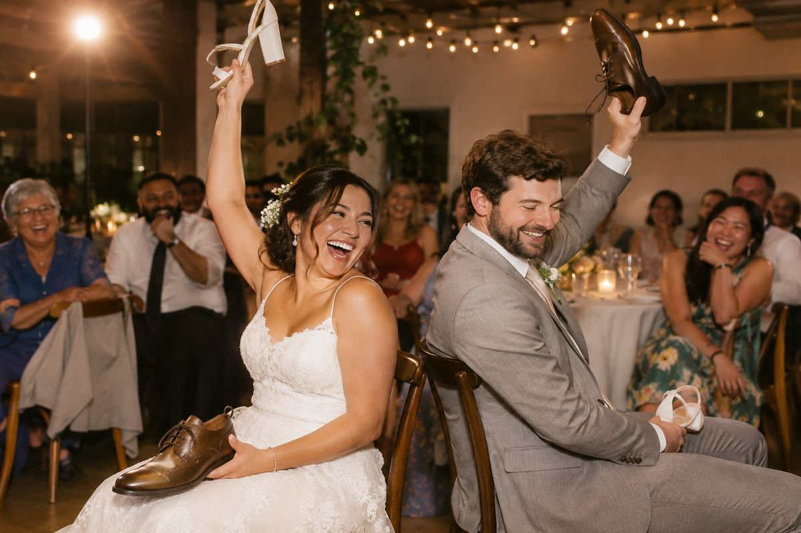

Wedding Reception Games for Guests: 30 Ideas + What to Skip
Cocktail hour to last dance: what to play, how long it takes to set up and what to skip.

Short answer: The best wedding reception games for guests are low-pressure and easy to drop in and out of: lawn games and advice cards at cocktail hour, table trivia at dinner, the shoe game and an anniversary dance after the toasts, and a photo challenge that runs all night. Keep each hosted game under ten minutes, and skip anything that puts one guest on the spot.
Below are 30 games and activities sorted by when they fit in the night, each with a setup time, a rough cost and a tip that makes it work. You’ll also find picks by guest type, the games to leave off the schedule and a sample timeline for your DJ.
How to choose wedding reception games for guests
- Fill the gaps, not the whole night. Games belong where guests would otherwise wait: cocktail hour, between courses, the lull after the toasts. Two or three hosted games plus a few self-serve activities is plenty.
- Keep hosted games under ten minutes. Your band, caterer and venue run on a schedule.
- Make everything opt-in. The best games let people play from their seat or not at all.
- Give each game an owner. The MC runs the spotlight games; a friend looks after the lawn games and the prize table.
- Ask your venue first. Check where lawn games can go, whether glow sticks or confetti are allowed, and the noise curfew before you buy anything.
In the list below, setup times and costs are rough estimates for doing it yourself, as of November 2026: $ is under $25, $$ is $25 to $100 and $$$ is more than $100.
Cocktail hour games
1. Lawn games
Setup: 15 minutes · Cost: $$ (free if you borrow) · Best for: mixed ages, outdoor receptions
Cornhole, a giant tumbling-block tower, ring toss and bocce cover every skill level. The American Cornhole Association’s official rules put adult boards 27 feet apart, front edge to front edge, and boards for kids 12 and under 12 to 15 feet apart; for guests in dress shoes on grass, somewhere in between feels right. Add a small sign with house rules, and keep the games away from the family portraits.
2. Guest bingo
Setup: 1 hour (print ahead) · Cost: $ · Best for: big crowds, families who haven’t met
Each square is a person to find: “flew in from another time zone,” “was at the couple’s first date,” “has been married 40 years.” Pull the facts from an RSVP question (“Tell us one surprising thing about you”) so every square points to a real guest. The first full row wins a prize at dinner.
3. Guess the jar
Setup: 10 minutes · Cost: $ · Best for: every guest, zero effort
Fill a jar with wine corks or wrapped candies, or skip the jar and ask how many days the couple has been together. Guests write a guess and their name on a slip, the closest wins, and the MC announces it at dinner. It’s the one game a guest can play in ten seconds on the way to the bar.
4. The “how far did you travel?” map
Setup: 10 minutes · Cost: $ · Best for: destination weddings, introverts
Hang a large map with a cup of pins and ask guests to mark where they came from. It starts conversations (“you drove from where?”) and doubles as a keepsake. Photograph it before it gets packed away.
5. Two truths and a lie, couple edition
Setup: 15 minutes · Cost: $ · Best for: mingling
Post three statements about the two of you on a sign, such as “They met at a bus stop,” “Their first trip was to Iceland” and “They share a middle name.” Guests vote with a sticker, and the MC reveals the lie during dinner. Choose facts that even a brand-new friend has a fair shot at guessing.
6. Couple photo jigsaw
Setup: 5 minutes · Cost: $$ (custom puzzles) · Best for: introverts, guests who don’t dance
Order a 300- to 500-piece puzzle printed with an engagement photo and leave it on a well-lit side table. Guests who don’t love mingling get something to do with their hands, and the finished puzzle can be framed.
7. Advice and wishes cards
Setup: 10 minutes · Cost: $ · Best for: every guest
A blank “advice for the couple” card mostly gets you “communicate!” Ask something specific instead: “The best meal to cook together,” “A place we have to visit,” “How to end an argument in five minutes.” Specific prompts get answers you’ll reread for years. For more keepsakes that do double duty, see these wedding guest book alternatives.
Dinner games
8. Table trivia between courses
Setup: 1 to 2 hours to write · Cost: $ · Best for: competitive crowds, tables of strangers
Run three rounds of five questions, one between each course, and mix couple trivia with general knowledge so guests who met you last month can still score. Each table answers on one sheet. The Knot’s 2026 Real Weddings Study reported an average of 117 guests at 2025 weddings; that’s about 12 tables of 10, which an MC can score while plates are cleared.
9. Sing for a kiss
Setup: none · Cost: free · Best for: lively dinners
A friendlier take on clinking glasses: the couple kisses only when a whole table stands and sings a line from a love song. Have the MC explain it once and cap it at a few tables per course, or nobody finishes dinner.
10. Love-story mad libs
Setup: 1 hour · Cost: $ · Best for: mixed ages, smaller receptions
Write your how-we-met story with ten blanks (“an adjective,” “a place,” “a type of food”) and print one per place setting or in the program. The MC reads the two funniest after the main course.
11. Table poems
Setup: 5 minutes · Cost: $ · Best for: creative tables, quiet guests who like writing
Each table gets a card that says “Write a four-line poem for the couple.” Collect them before dessert and have the MC read the best three. Keep them all; they make a lovely keepsake.
12. Prediction cards
Setup: 30 minutes · Cost: $ · Best for: guests who like a long game
Guests predict things about the night: the length of the longest toast, the first song after dinner, the time the last guest leaves. Score them the next day and announce the winner at brunch or in a thank-you text. Leave out predictions about babies or anything personal.
13. Date-night jar
Setup: 10 minutes · Cost: $ · Best for: introverts, every age
Leave wooden sticks and markers on each table and ask for one date idea per guest. You pull one a month for the first year. Specific ideas (“tacos on Fifth Street, then mini golf”) beat vague ones, so put an example on the sign.
14. First-anniversary letters
Setup: 15 minutes · Cost: $ · Best for: quiet guests, close family
Set out paper, envelopes and a sealed box labeled “Open on our first anniversary.” Guests write a note to be read a year from now. It’s a calm, phone-free activity for anyone who’d rather not be on the dance floor.
15. Kids’ table activity kits
Setup: 1 hour (pack the night before) · Cost: $ · Best for: kids
Pack a paper bag per child with crayons, a coloring placemat, a sticker sheet and a kids’ photo-hunt card. Seat the kids’ table near their parents and away from the sound system. A busy kid during the toasts is a gift to everyone.
After the toasts: games for the bride and groom
These put the couple at the center, and they work just as well for two brides, two grooms or any pair. Run one or two, right before the dance floor opens.
16. The shoe game
Setup: 5 minutes · Cost: free · Best for: every crowd
The couple sits back to back, each holding one of their own shoes and one of their partner’s, and raises a shoe to answer questions like “Who said ‘I love you’ first?” Keep it to 10 to 12 questions and about five minutes. Give the MC the list in large type, and end on a question you’ll both answer the same way, like “Who got luckier?”

17. Anniversary dance
Setup: none · Cost: free · Best for: mixed ages, a sweet lead-in to open dancing
The DJ invites every couple to the floor, then asks those together less than one year, five years, ten years and so on to sit down until the longest-together couple is left. Ask that couple ahead of time whether they’d share one piece of advice on the mic. Counting years together rather than years married keeps more people dancing.
18. Guest-question newlywed quiz
Setup: 10 minutes · Cost: $ · Best for: crowds who love the couple’s stories
Put an “Ask the couple anything” card on each table during dinner. The MC screens them, picks five and asks them after the toasts. Screening matters: you want “Who apologizes first?”, not “Tell us about your ex.”
19. Family vs. friends quiz
Setup: 1 hour · Cost: $ · Best for: competitive families, two sides that haven’t met
Two teams of five, one from the families and one from the friends, answer quick-fire questions about the couple. It breaks the ice between the two halves of the room, and it’s over in ten minutes.
20. Wedding party musical chairs
Setup: 5 minutes · Cost: free · Best for: high-energy crowds
Line up one chair fewer than there are wedding party members and let the DJ stop the music. Volunteers only, agreed in advance, so nobody gets dragged up. It pulls a seated room to its feet just before the dancing.
21. Name that tune
Setup: 30 minutes with your DJ · Cost: free · Best for: music lovers, mixed ages
The DJ plays five-second intros from your favorite songs and tables shout or write the titles. Include a song from every decade represented in the room so grandparents get a win too. It’s the smoothest bridge from dinner to dancing, because the final answer can be the first dance-floor track.
Dance-floor and late-night games
22. Freeze dance
Setup: none · Cost: free · Best for: kids and grandparents
The DJ stops the music, everyone freezes, and anyone caught moving sits out. Run it for one song early in the dancing and you’ll pull kids and older guests onto the floor at the same time. The last one standing picks the next song.
23. Dance circle or line
Setup: none · Cost: free · Best for: crowds that need a nudge
A circle with one dancer in the middle, or two lines with pairs dancing down the gap. Ask four confident friends in advance to go first, and have the DJ choose a song everyone knows. Nobody should ever be pushed into the middle.
24. Ribbon limbo
Setup: 2 minutes · Cost: free · Best for: kids, late-night crowds
Two people hold a ribbon or scarf, the DJ plays a song and the ribbon drops a few inches each round. Clear glasses off the floor first and give kids their own round.
25. Glow-stick hour
Setup: 5 minutes · Cost: $ · Best for: re-energizing the room
Hand out glow sticks and bracelets when the energy dips, usually after the cake. Kids love them and the dance-floor photos glow. Check your venue’s rules before buying anything messier, like confetti.
26. Late-night karaoke
Setup: 30 minutes · Cost: $$ to $$$ (DJ add-on or rented machine) · Best for: crowds who sing in the car
Ask whether your DJ offers karaoke, or set up a speaker and screen in a side room so singers and dancers don’t compete. A sign-up sheet with one song per person keeps the mic moving. Never call anyone up by name.
27. Casino-style card table
Setup: 15 minutes · Cost: $$ · Best for: guests who don’t dance
A table with cards, chips and a friend who knows blackjack or poker gives non-dancers somewhere to be. Play for prize tickets, never money, and give the biggest stack a bottle of wine.
All-night photo games
28. Photo scavenger hunt
Setup: 1 hour (print cards) · Cost: $ · Best for: every guest, especially kids
Each table gets a card of 8 to 12 photo prompts (“three generations on the dance floor,” “the room raising glasses, shot from the back”) that runs from cocktail hour to the last song. Decide where the photos go before you print. Our wedding photo scavenger hunt guide has 75 prompts and a printable card.
29. The shared disposable-camera challenge, with a next-morning reveal
Setup: 10 minutes, a week ahead · Cost: free for up to 10 guests; bigger films use a one-time pass · Best for: every guest, all night
Disposable cameras on the tables are a reception classic, but buying and developing them adds up (here’s whether disposable cameras at weddings are worth it). The same game now runs on guests’ own phones. With Filmsera, a shared disposable camera app for iPhone, you create one film for the reception, give every guest a small number of shots (12 by default) and print the QR code on your table cards.
Guests join by scanning the code, in the free iPhone app or from any phone’s browser with no app or account. Every shot stays hidden until the reveal time you choose, so the challenge is making each one count. Choose Custom and set the reveal for the next morning, and the whole roll appears at once for everyone in the film, each photo tagged with who took it, along with a short recap reel set to music.

The limits, as of November 2026: the host needs an iPhone, browser guests shoot photos only, and free films keep photos for 30 days after the reveal (a pass keeps them for a year). Our Filmsera for weddings page walks through the rest.
Filmsera turns every guest’s phone into the same disposable camera, keeps every photo sealed until the time you pick and opens the whole roll for everyone at once. Get Filmsera on the App Store
30. Photo booth prop challenge
Setup: 1 hour (DIY) or a rental · Cost: $$ to $$$ · Best for: friend groups, kids
A booth gets busier with a challenge attached: a new prop theme every hour, or a card that says “recreate a famous painting.” For rental costs, DIY gear and backdrops that don’t look cheap, see our wedding photo booth ideas.
Best wedding reception games by guest type
| Your crowd | Start with | Go easy on |
|---|---|---|
| Mixed ages | Anniversary dance, freeze dance, name that tune, lawn games | Games that need fast running or a phone to play |
| Lots of kids | Kids’ activity kits, freeze dance, ribbon limbo, a kids’ photo-hunt card | Late-night drinking games near the kids’ table |
| Introverts and guests who know no one | Jigsaw, advice cards, date-night jar, anniversary letters, team trivia | Spotlight games like lip-sync battles |
| Competitive friends | Table trivia, a cornhole bracket, family vs. friends quiz | Games with no clear winner |
| Big crowds (150+) | Guest bingo, table trivia, shared camera challenge | Anything the MC has to run one guest at a time |
Wedding reception games to skip (and what to do instead)
- Surprise spotlight games. Calling guests up by name puts people on the spot. Use volunteers you’ve asked in advance.
- Questions about sex, exes, babies, weight or money. Grandparents, kids and coworkers are in the room, and some topics hurt people quietly. Ask about habits, travel and firsts instead.
- Pressure drinking games. Some guests don’t drink, and the mood can turn fast. If your crowd wants them, keep them late, opt-in and with a nonalcoholic version.
- Pay-to-play games. Guests have already spent on travel and gifts. If a money dance is part of your family’s tradition, keep it as a tradition; just don’t stack paid games on top.
- Mandatory singles calls. If you keep the bouquet or garter toss, make it opt-in rather than summoning every single guest to the floor.
- Long games mid-reception. Anything over ten minutes stalls the timeline. Make it self-serve or cut it.
A sample reception timeline with games
Here’s how the games above could fit a five-hour reception starting at 5 p.m. Shift the times to match yours, and send the plan to your DJ or MC a week ahead.
| Time | What’s happening | Games that fit |
|---|---|---|
| 5:00 p.m. | Cocktail hour | Lawn games, guest bingo, guess the jar, the travel map; the photo hunt and shared camera challenge start |
| 6:00 p.m. | Entrance and dinner | Trivia round 1, sing for a kiss, mad libs, kids’ kits; bingo and jar winners announced |
| 6:45 p.m. | Toasts | No games during speeches; finish trivia rounds 2 and 3 between courses |
| 7:15 p.m. | First dance and parent dances | None; let the photographer work |
| 7:30 p.m. | Couple games | Shoe game (5 minutes), anniversary dance (one song) |
| 7:45 p.m. | Dancing opens | Name that tune, freeze dance |
| 9:00 p.m. | Cake and late-night snack | Glow-stick hour, ribbon limbo, karaoke room, card table |
| 10:00 p.m. | Last song and send-off | Photo hunt closes |
| Next morning | Brunch | Shared film reveal, scavenger hunt prizes, prediction card winners |
Hosting guests the next day? Our post-wedding brunch ideas include a two-hour run of show built around opening the night’s photos together.
FAQ
What are good wedding reception games for guests who don’t know each other?
Pick games that give strangers a reason to talk without putting anyone on the spot. Guest bingo built from RSVP facts, team table trivia between courses and a two-truths-and-a-lie sign about the couple all work well. Self-serve activities such as a map of where everyone traveled from or a jigsaw of the couple’s photo let quieter guests join in at their own pace.
How many games should you have at a wedding reception?
Two or three hosted games, such as the shoe game and an anniversary dance, plus two or three self-serve activities like lawn games, advice cards or a photo scavenger hunt. Keep each hosted game under ten minutes so the timeline holds. Any more than that and the reception starts to feel like a game show instead of a party.
When should you play games at a wedding reception?
Use the natural gaps. Self-serve games fit cocktail hour, table games fit between dinner courses, and couple games like the shoe game or an anniversary dance fit right after the toasts, just before the dancing opens. Keep games out of the ceremony and the first dance, and save prize announcements for the end of the night or the next morning.
What are the best wedding reception games for the bride and groom?
The shoe game is the classic: the couple sits back to back and raises a shoe to answer questions about each other. A newlywed quiz built from questions guests submit at dinner, and an anniversary dance that ends with the longest-together couple sharing advice, also put the couple at the center without embarrassing anyone. All three work for any couple.
What wedding reception games work indoors?
Most of them. Table trivia, love-story mad libs, table poems, name that tune, a jigsaw puzzle, a card table and freeze dance all work in a ballroom or a restaurant. A giant tumbling-block tower fits indoors if your venue allows it, and ribbon limbo needs nothing more than a clear patch of dance floor.
Written by the Filmsera team
Filmsera is a shared disposable camera app for iPhone: create a film for your event, let guests join by QR code from the app or their phone's browser, and open the whole roll together at the reveal. Download on the App Store →
Photos in this article are illustrations created for Filmsera, not customer photos. App screenshots are from Filmsera on iPhone.